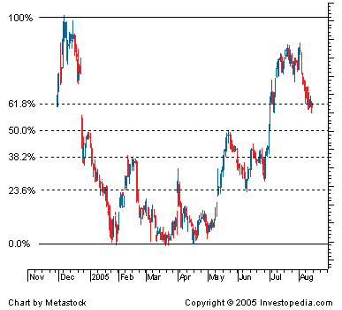

A term used in technical analysis that refers to areas of support (price stops going lower) or resistance (price stops going higher). The Fibonacci retracement is the potential retracement of a financial asset's original move in price. Fibonacci retracements use horizontal lines to indicate areas of support or resistance at the key Fibonacci levels before it continues in the original direction. These levels are created by drawing a trendline between two extreme points and then dividing the vertical distance by the key Fibonacci ratios of 23.6%, 38.2%, 50%, 61.8% and 100%.
Fibonacci retracement is a very popular tool used by many technical traders to help identify strategic places for transactions to be placed, target prices or stop losses. The notion of retracement is used in many indicators such as Tirone levels, Gartley patterns, Elliott Wave theory and more. After a significant price movement up or down, the new support and resistance levels are often at or near these lines.
{kind=link}